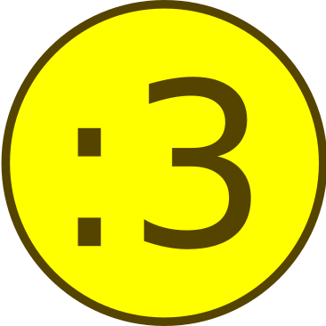

NICEMACS

Table of Contents
- Vanilla Emacs
- Nicemacs
- Applications
- Broken spacemacs dot file?
- Debugging
- Code navigation
- Recursive grep
- System
- Spacemacs shortcuts
- Usage notes
- Stuff
- Completion
- LSP
- Haskell
- Maxima
- JavaScript and Typescript
- Miscellaneous configuration for writing
- Spelling and Dictionaries
- Latex and Bibtex
- Org-mode
- Website
- Shells and REPLs
- Monitoring processes
- Emacs Speaks Statistics (ESS)
- Version control via magit
- Spray
- Window and frame manipulation
- TODO File and buffer manipulation
- Unicode and Greek letters
- TODO XML editing
- Yasnippet snippets
Vanilla Emacs
Build you an Emacs
Get the source code from here with
wget http://git.savannah.gnu.org/cgit/emacs.git/snapshot/emacs-VERSION.tar.gz tar -xf emacs-VERSION.tar.xz
Alternatively, you can get clone the emacs mirror from GitHub and check out the
emacs-28 branch (or whatever version you want).
Follow the instructions in the INSTALL file to build emacs.
- This seems to just be
./configurethenmakethensudo make install../configure --with-native-compilation --with-rsvg.
- If you cannot find the
configurescript, you may need to runautogen.shfirst. - If you have spare compute you can use multiple jobs to speed up the
compilation with
make -j [N]to useNjobs during compilation
Notes
emacs-28.2emacs-28.1.90configured with--with-native-compilationand--with-rsvg. Building this one seemed to take longer than normal.emacs-28.1. I also installedlibgccjitand used./configure --with-native-compilationduring the compilation, it does feel snappier.emacs-28.0.91requestedmailutilsto be installed during configuration.emacs-28.0.60requestedlibacl1-devandlibharfbuzz-devbe installed during configuration. It does feel snappier. It told me that my current version of GTK+ leads to a bug but I couldn't figure out how to update GTK+ and it seemed to be an up to date version anyway.emacs-27.2build and installs without issue.
Running you an Emacs
The following command demonstrates how to run emacs as a daemon in the
foreground (use --daemon to run it in the background)
emacs --fg-daemon
Then to create a new frame (or visit a file)
emacsclient --no-wait --create-frame
Recording keyboard macros
- Start recording with
C-x ((which callskmacro-start-macro). - Stop recording with
C-x )(which callskmacro-end-macro). - Execute the recording with
C-x e(which callskmacro-end-and-call-macro).
If you want to save a macro for later use, you can get a emacs-lisp definition
of it with insert-kbd-macro.
Jargon
There is a glossary in the manuals, the nodes are Emacs > Glossary. The regex
search entered with s is very useful here.
Mastering Emacs
Here are some notes from reading Mastering Emacs.
Chapter 2
- "In Emacs, the buffer is the data structure."
- A window is a tiled portion of a frame.
- The modeline is the portion at the bottom of a window that displays information such as the name of the buffer displayed and the major mode.
- The minibuffer is the below the modeline and displays messages.
- The point is the current position of the cursor.
- The region is a selection of text which has the point at one end and the mark at the other. The region is visually displayed with the transient mark mode (TMM).
- killing is cutting text, yanking is pasting it, and saving to the kill ring is copying.
- font locking is syntax highlighting.
Chapter 3
- In order for a function to be executed by
M-x, it needs to be made interactive. - apropos is a system to for discovery:
apropossearches everything,apropos-commandsearches commands,- and
apropos-documentationsearches documentation.
- The describe system is a collection of functions that allow you to obtain
information about known items:
describe-mode,describe-function,describe-variable,- and
describe-key.
Chapter 4
Chapter 5
Chapter 6
- There is the function
read-only-modewhich toggles read only mode, which replaces the obsoletetoggle-read-onlyfunction.- In Spacemacs this is bound to
SPC b wwhich seems strange.
- In Spacemacs this is bound to
Chapter 7
Getting HELP
There are a couple of help menus that are useful to be able to access easily:
- GNU Emacs NEWS can be summoned with
view-emacs-news. - Spacemacs documentation can be summoned with
helm-spacemacs-help-docs. - GNU Emacs Manual can be summoned with
info-display-manual. - Emacs Lisp Intro has a section on debugging.
Info navigation
The following are key-bindings for emacs mode (use \ to call
evil-execute-in-emacs-state):
nnext nodepprevious node^will move upRETwill follow a linklreturn to the last node visitedssearch with a regexffind a node linked from heredgo to the root node
Nicemacs
███╗ ██╗██╗ ██████╗███████╗███╗ ███╗ █████╗ ██████╗███████╗ ████╗ ██║██║██╔════╝██╔════╝████╗ ████║██╔══██╗██╔════╝██╔════╝ ██╔██╗ ██║██║██║ █████╗ ██╔████╔██║███████║██║ ███████╗ ██║╚██╗██║██║██║ ██╔══╝ ██║╚██╔╝██║██╔══██║██║ ╚════██║ ██║ ╚████║██║╚██████╗███████╗██║ ╚═╝ ██║██║ ██║╚██████╗███████║ ╚═╝ ╚═══╝╚═╝ ╚═════╝╚══════╝╚═╝ ╚═╝╚═╝ ╚═╝ ╚═════╝╚══════╝
Applications
Browser (Firefox)
The following function will launch a firefox process asynchronously. This
function is bound to owner > applications > firefox.
(defun nicemacs-launch-firefox () "Launch firefox asynchronously" (interactive) (async-shell-command "firefox"))
Password manager
(defun nicemacs-launch-seahorse () "Launch seahorse asynchronously" (interactive) (async-shell-command "seahorse"))
Broken spacemacs dot file?
There is SPC f e D (bound to spacemacs/ediff-dotfile-and-template) to help
you debug your dot file if an update means it is out of date. When in this menu,
use ? to toggle the display of a cheat-sheet for diffing with ediff.
The function spacemacs/ediff-dotfile-and-template calls ediff-files with the
current spacemacs dot file and a template that comes with spacemacs. This might
be of interest for other diffing as an alternative to programs such as Meld.
Debugging
There is excellent documentation on how to use the debugger in the Spacemacs
documentation for the emacs lisp layer. Note that there are two debuggers in
emacs: debug and edebug. Edebug is the newer one and probably what you want
to use. The important key bindings in spacemacs are
SPC m e fto evaluate a function,SPC m d f(with the cursor on the relevantdefunkeyword to set a breakpoint on a function,SPC m e eto evaluate an expression which leads to the function being evaluated.
Once you are in the debugger, use s to step to the next thing, and i to step
into the current routine and o to step out. Use a to abort the debugger.
While debugging, open an ielm REPL to inspect the current values of variables.
Code navigation
Moving around a buffer is important. Use evil-set-marker to store a position
in the mark-ring (a variable that holds locations in a buffer). The evil way to
use this is to type m and then provide a character, eg, a to denote this
mark. Use evil-previous-mark which is bound to [ ` to navigate through the
marks in the mark-ring.
Recursive grep
The rgrep function is used to recursively search files matching a given pattern.
After running rgrep you will be asked for the search term, a pattern to specify
the filenames to search and finally the root directory of the search. The
results are presented in a buffer which links to the matches found.
System
Set the user name
The user-full-name variable is what org-mode uses as the author name when it
exports to HTML. Setting this variable here is a way to ensure that a sensible
author name is produced.
(setq user-full-name "Alexander E. Zarebski")
Nicemacs variables
Here are some variables that are useful to simplify some subsequent code. If you are using this on your own machine, you might need to adjust these.
(defvar nicemacs-resources-dir "~/Documents/nicemacs/resources" "The path to nicemacs on my machine.") (defvar nicemacs-journal-directory "~/Documents/journal" "The directory for nicemacs journal files.") (defvar nicemacs-quick-links-page "~/Documents/quick-links.html" "The HTML file with some useful in the browser.")
Display battery percentage
To toggle the display of the battery there is the shortcut SPC t m b which runs
the command spacemacs/toggle-mode-line-battery.
Display time
To toggle the display of the time there is the shortcut SPC t m t which runs the
command spacemacs/toggle-display-time. Note that you can configure the way in
which the time is displayed.
Spacemacs shortcuts
| Keys | Function | Description |
|---|---|---|
SPC b b |
List buffers | |
SPC b d |
Kill buffer | |
SPC f e d |
Open .spacemacs |
|
SPC f e D |
Diff your .spacemacs against default |
|
SPC f e R |
Reload .spacemacs |
|
SPC TAB |
Switch to last buffer | |
SPC f s |
Save file | |
SPC f f |
Find (visit) file | |
SPC f l |
Find (visit) file literally | |
SPC h d <x> |
Help describe thing, e.g. key-binding, or variable | |
SPC w d |
Kill the current window (not the frame) | |
SPC T n |
Toggle the theme | |
SPC q r |
Restart emacs | |
SPC q q |
Quit emacs | |
SPC v |
Selects outwards sensibly | |
SPC t l |
Will toggle truncation (wrapping) of (long) lines. | |
<f10> |
menu-bar-open |
Opens a menu bar (good for feature discovery) |
Owner menu
The spacemacs documentation recommends that you store all of your shortcuts with a prefix of "o" for owner.
(spacemacs/declare-prefix "o" "own-menu")
There are then sum submenus that are useful to help group related functions:
(spacemacs/declare-prefix "oa" "applications-menu") (spacemacs/declare-prefix "ob" "bibtex-menu") (spacemacs/declare-prefix "oc" "commits-menu") (spacemacs/declare-prefix "of" "file-stuff") (spacemacs/declare-prefix "off" "fetch resource") (spacemacs/declare-prefix "ofu" "update resource") (spacemacs/declare-prefix "oh" "haskell-menu") (spacemacs/declare-prefix "ol" "latex") (spacemacs/declare-prefix "oo" "org-menu") (spacemacs/declare-prefix "op" "paragraph-modification-menu") (spacemacs/declare-prefix "os" "sheila-menu") (spacemacs/declare-prefix "oS" "Search") (spacemacs/declare-prefix "ou" "unicode-stuff") (spacemacs/declare-prefix "ov" "visit friends") (spacemacs/declare-prefix "ovd" "directories") (spacemacs/declare-prefix "ovn" "notes") (spacemacs/declare-prefix "ovr" "reviews") (spacemacs/declare-prefix "ow" "window management") (spacemacs/declare-prefix "owf" "frame management")
Here we bind a function to the application menu.
(spacemacs/set-leader-keys "oaf" 'nicemacs-launch-firefox) (spacemacs/set-leader-keys "oap" 'nicemacs-launch-seahorse)
Usage notes
To tangle the nicemacs.el file from the command line execute the following
command:
emacs nicemacs.org --batch --eval="(org-babel-tangle)"
Then to include this in your spacemacs configuration add the following
expression to dotspacemacs/user-config:
(load "/home/aez/Documents/nicemacs/nicemacs.el")
Emacs-LISP REPL
From time to time it will be useful to have access to an emacs lisp REPL. To
start this REPL run the ielm command.
Configuration layers
This configuration is used from within spacemacs, so it seems appropriate that I should also document the configuration layers that I use.
'(auto-completion better-defaults bibtex (colors :variables colors-enable-nyan-cat-progress-bar t) csv dap dhall emacs-lisp emoji epub (ess :variables ess-r-backend 'lsp) git graphviz (hackernews :variables hackernews-items-per-page 24) (haskell :variables haskell-completion-backend 'lsp haskell-process-type 'stack-ghci hsakell-enable-hindent-style "fundamental") helm html hy (java :variables java-backend 'lsp) (javascript :variables javascript-repl `skewer javascript-backend 'lsp) latex lsp maxima multiple-cursors nixos org plantuml (python :variables python-backend 'lsp python-indent-offset 4) racket semantic (shell :variables shell-default-shell 'eshell shell-default-position 'right shell-default-width 50) speed-reading (spell-checking :variables spell-checking-enable-by-default nil enable-flyspell-auto-completion t) syntax-checking version-control web-beautify yaml)
- The
colorslayer makes it easier to understand how far through a file you are. - The
emojilayer makes it easier to use emojies.
Stuff
To quickly toggle between the default spacemacs themes use SPC T n (the
default bindings.)
Supported image formats
To test if an image format is supported there is the image-type-availability-p
function. For example, to check if you can view SVG, you would evaluate
(image-type-availability-p 'svg).
Start up/splash page
I prefer the startup banner number 100, to use this put 100 for the
dotspacemacs-startup-banner value in .spacemacs. To avoid having unnecessary
icons displayed, the following can be used.
(setq dotspacemacs-startup-buffer-show-icons nil)
Default colour schemes
The hexcodes for the default colour schemes used by Spacemacs can be found in
spacemacs/core/libs/spacemacs-theme/spacemacs-common.el
Scratch buffer
If you want to scratch something out quickly there is the scratch buffer
provided by spacemacs at SCP b s. By default this opens in text mode. To avoid
always needing to switch it into org-mode we can set the following variable
instead.
(setq dotspacemacs-scratch-mode 'org-mode)
Ugly ugly scroll bar
I very much do not want to scroll bar popping up every now and then so I will remove the advice to do this!
(advice-remove 'mwheel-scroll #'spacemacs//scroll-bar-show-delayed-hide)
Stop undo-tree-mode scattering files
The undo-tree-mode will save a history of actions to a file so they are not
lost when you close emacs. You can customise where these files get stored, but
in the interest of keeping things snappy, I think it is probably nicer just to
avoid this feature by editing the undo-tree-auto-save-history.
(setq undo-tree-auto-save-history nil)
Run rgrep
The key-binding for rgrep should sit under the search leader key.
(spacemacs/set-leader-keys "oSg" 'rgrep)
Completion
The following potentially reduce the latency in input which can be increased by unnecessary calls to a completion backend.
(setq company-idle-delay 0.5) (setq company-minimum-prefix-length 3)
LSP
The path to the current file in LSP is a little unnecessary.
(setq lsp-headerline-breadcrumb-enable nil)
LSP tends to be a bit too eager to display help under the default delay of 0.2 seconds and this also leads to an unnecessary amount of communication. To improve this we can increase the delay for both the documentation and the sideline display.
(setq lsp-ui-doc-delay 1.0) (setq lsp-ui-sideline-delay 1.0)
Alternatively, setting the following variables will allow you to remove UI displays entirely:
(lsp :variabless lsp-ui-doc nil lsp-ui-doc-enable nil)
Haskell
(spacemacs/set-leader-keys "ohr" 'haskell-process-restart) ;; Set the input method to TeX for using unicode. Use C-\ to unset this. (spacemacs/set-leader-keys "ohu" 'set-input-method)
Formatting code without LSP
If you are not using LSP then the following might be useful additions if you
have hindent installed. Although I suspect a nicer option is to use stylish-haskell with LSP.
(spacemacs/set-leader-keys "ohhr" 'hindent-reformat-region) (spacemacs/set-leader-keys "ohhb" 'hindent-reformat-buffer)
You will probably also want to set the haskell-enable-hindent-style variable
to "fundamental".
(setq haskell-enable-hindent-style "fundamental")
Formatting code with LSP
If you are using LSP then hindent is not available by default. stylish-haskell
seems to be an acceptable replacement though. The
lsp-haskell-formatting-provider is used to specify which formatting tool to
use.
(setq lsp-haskell-formatting-provider "stylish-haskell")
LSP and Haskell
Even after installing the haskell-language-server using the GHCUP installation
method there were some issues because emacs could not find it. It appears that
setting the lsp-haskell-server-path to the executable solved things.
- Install
ghcup, which will also offer to install the Haskell language server for you.
GHCUP installation instructions are here
- Make sure that this has been added to the
exec-pathand thatlsp-haskell-server-pathis set. Note that some projects might get upset about the language server being used, adjust this and restarting emacs is a hacky solution by it works.
(setq exec-path (append exec-path '("/home/aez/.ghcup/bin"))) (setq lsp-haskell-server-path "/home/aez/.ghcup/bin/haskell-language-server-8.10.4")
- Make sure that the layer variables have been set to use LSP.
(haskell :variables haskell-completion-backend 'lsp haskell-process-type 'stack-ghci)
Maxima
See maxima-layer by Daniel Nicolai.
JavaScript and Typescript
At the time of writing, the path to node is
/home/aez/.nvm/versions/node/v17.3.1/bin, since this is used a few times we
should define this as a constant.
(defvar my-node-path "/home/aez/.nvm/versions/node/v17.3.1/bin" "The path to node on my machine.")
The following needs to be included for Eshell to be able to find node and npm. I'm not sure why you need to do it twice.
(setenv "PATH" (concat (getenv "PATH") ":" my-node-path)) (setq exec-path (append exec-path (list my-node-path)))
By default the REPL used is geared towards front end work. To get it to use the node REPL add the following to the configuration so that the correct command is called.
(defun my-nodejs-repl-command () (concat my-node-path "/node")) (setq nodejs-repl-command 'my-nodejs-repl-command)
Using Skewer mode and simple HTTPd for browser stuff
The following is based on a StackOverflow answer. To start a server out of emacs you use the following commands
(require 'simple-httpd) ;; set root folder for httpd server (setq httpd-root "<path/to/foo.html>")
Then call httpd-start to actually start the server.
skewer-mode allows you to run a server and interact with the browser from
emacs. The header of your HTML file needs to include skewer.js, for example
you could have the following as a starter page.
<!doctype html> <html> <head> <!-- Include skewer.js as a script --> <script src="http://localhost:8080/skewer"></script> <!-- Include my script.js file --> <script src="script.js"></script> </head> <body> <p>Hello world</p> </body> </html>
An example script.js might be
alert('hey!');
Once you have this set up and the page open in your browser, use skewer-repl
to start the REPL and console.log('hello there') to test it is actually
working.
Note, when I first used this there was some old configuration relating to some NodeJS work which I needed to remove before it would recognise I was interested in browser based JavaScript.
D3: data driven documents basic set up
The following snippet demonstrates how you might copy the files here to a new directory to start a D3 based project.
(defun nicemacs-d3-setup (dir) "Set up a minimal D3 project" (interactive "Where should the D3 project go? ") (progn (make-directory dir) (let ((d3-files (list "d3.js" "demo.js" "demo.org" "index.html" "blah.csv"))) (mapc (lambda (x) (copy-file (concat nicemacs-resources-dir "/d3-template/" x) (concat dir "/" x))) d3-files)))) (spacemacs/set-leader-keys "ofj" 'nicemacs-d3-setup)
Miscellaneous configuration for writing
- A neat way to change a block of text from upper to lower case is to select the
appropriate region and use
uandUto toggle the case. - If you want a word count there is the
count-wordsfunction. This is used so infrequently though that it is not really worth adding a binding for it. By default it counts the words in the current buffer, but if you have selected a region of text it will count the words and characters there.
Toggling paragraph filling
There are the org-fill-paragraph and unfill-paragraph functions which are
useful to switch between representations of paragraphs when copying between
editors. I think a suitable binding for these command is SPC o p f for fill
and SPC o p u for unfill.
(spacemacs/set-leader-keys "opf" 'org-fill-paragraph) (spacemacs/set-leader-keys "opu" 'unfill-paragraph)
On a related note, there is SPC t F which runs toggle-auto-fill-mode which
stops automatic line wrapping.
Emoji
I always forget the names of various emoji, and it is easier to add them to text quickly if you know what they are called.
| Emoji | Name |
|---|---|
| 🎉 | tada |
Spelling and Dictionaries
There is a dictionary mode which provides the dictionary function and the
dictionary-tooltip-mode. Finding a suitable offline dictionary is challenging
though.
Apell dictionary
- The personal Aspell dictionary file (which is probably
.aspell.en.pws) has a number in the header which is used to hint the dictionary size but does not need to be exactly correct. - There is a copy of this in
~/Documents/nicemacs/resources/aspell.en.pws, and there is a shortcutSPC offswhich fetches a copy of this file.
Spell checking
- Highlight the text and use
SPC S rto spellcheck that region. - Use
SPC S bto spellcheck the buffer (it callsflyspell-buffer) - Use
SPC S sto open spelling suggestions for the work under the cursor. - When you add a word to a personal dictionary it is saved in
~/.aspell.en.pws. A (probably outdated) version of my personal dictionary is here. Alternatively you can add it to a buffer specific list of words at the bottom of the file.
Latex and Bibtex
To ensure that files with the extension .bibtex open in bibtex-mode we need
to explicitly request this
(add-to-list 'auto-mode-alist '("\\.bibtex\\'" . bibtex-mode))
Here are the keybindings for the bibtex functionality, the leader sequence is Owner Bibtex X where
- B for braces around upper case characters,
- C for convert between RIS and bibtex,
- F for format the current buffer,
- L for last bibtex file in
Downloadsand
(spacemacs/set-leader-keys "obl" 'nvf-last-bib) (spacemacs/set-leader-keys "obf" 'bibtex-reformat) (spacemacs/set-leader-keys "obb" 'bibtex-braces) (spacemacs/set-leader-keys "obc" 'bibtex-ris2bib)
Visiting most recent bib file
The nvf-last-bib function opens the most recent Bibtex file in the Downloads
directory in a new buffer. If there is no such file then a message is given to
indicate this.
(defun nvf-last-bib () "Visit the most recent BIB file in Downloads. TODO There should be a fall back such that if there is a TXT file that is younger than the last BIB file then copy it to a new file with the same basename but a BIB extension and open that instead." (interactive) (let* ((bib-files (directory-files-and-attributes "~/Downloads" t ".*bib" "ctime")) (path-and-time (lambda (x) (list (first x) (eighth x)))) (time-order (lambda (a b) (time-less-p (second b) (second a)))) (most-recent (lambda (files) (car (car (sort (mapcar path-and-time files) time-order)))))) (if (not (null bib-files)) (find-file (funcall most-recent bib-files)) (message "No bib files found in ~/Downloads/"))))
Formatting references
Bibtex requires that capital letters in the title be surrounded by braces to ensure that they are capitalised correctly. The following function is a way to quickly add these braces to long titles. Just highlight the relevant text and run the function.
(defun bibtex-braces () "Wrap upper case letters with brackets for bibtex titles." (interactive) (evil-ex "'<,'>s/\\([A-Z]+\\)/\\{\\1\\}/g"))
Converting RIS files
Some places seem reluctant to provide a bibtex file for a citation, but they all
seem to have RIS files available for download. There are tools to convert
between them. The bibtex-ris2bib function looks up the most recent RIS file in
your downloads directory and then converts that to a BIB file. You can then open
this file using the nvf-last-bib function from above.
(defun bibtex-ris2bib () "Convert the most recent RIS file in my downloads to a BIB file. TODO Add error message if there are no RIS files." (interactive "*") (let* ((all-ris-files (directory-files "~/Downloads" 1 ".*ris")) (modification-time (lambda (fp) (list (time-convert (file-attribute-modification-time (file-attributes fp)) 'integer) fp))) (ris-filepath (nth 1 (car (sort (mapcar modification-time all-ris-files) (lambda (x y) (> (car x) (car y))))))) (target-bib "/home/aez/Downloads/new.bib") (ris2xml-command (format "ris2xml %s | xml2bib > %s" ris-filepath target-bib))) (shell-command ris2xml-command)))
Appearance
We can use a hook to switch to proportional font for org-mode, because lines now
become a bit tricky we need to include visual-line-mode otherwise things look
weird.
(add-hook 'LaTeX-mode-hook 'variable-pitch-mode) (add-hook 'LaTeX-mode-hook 'visual-line-mode)
And then to get the faces looking good for the various elements of the display we have the following configuration
(custom-set-faces '(font-lock-comment-face ((t (:inherit fixed-pitch)))) '(font-lock-keyword-face ((t (:inherit fixed-pitch)))) '(font-latex-sectioning-2-face ((t (:inherit bold :foreground "#3a81c3" :height 1.3 :family "Noto Sans")))) '(font-latex-sectioning-3-face ((t (:inherit bold :foreground "#2d9574" :height 1.2 :family "Noto Sans")))))
Miscellaneous
(spacemacs/set-leader-keys "obl" 'nvf-last-bib) (spacemacs/set-leader-keys "obf" 'bibtex-reformat) (spacemacs/set-leader-keys "obb" 'bibtex-braces) (spacemacs/set-leader-keys "obc" 'bibtex-ris2bib)
Org-mode
Bindings for org-mode functionality start with o o for "owner org". for toggle
style functions we will have a sub-menu.
(spacemacs/declare-prefix "oot" "org-toggle-menu")
Writing
The following package is required to use CSL with org-mode citations
(require 'oc-csl)
The following can be used to hide extra markup symbols1.
(setq org-hide-emphasis-markers nil)
We can use a hook to switch to proportional font for org-mode, because lines now
become a bit tricky we need to include visual-line-mode otherwise things look
weird.
(add-hook 'org-mode-hook 'variable-pitch-mode) (add-hook 'org-mode-hook 'visual-line-mode)
To make sure that code blocks are still rendered with a fixed width font we need
to specify this. Note that the describe-char function is super helpful for
linking to further fine tuning via the customisation interface. Currently I am
using Noto with serifs for text and sans for headers.
(custom-set-faces '(org-block ((t (:inherit fixed-pitch)))) '(org-block-begin-line ((t (:inherit fixed-pitch :extend t :background "#ddd8eb" :foreground "#9380b2")))) '(org-block-end-line ((t (:inherit fixed-pitch :extend t :background "#ddd8eb" :foreground "#9380b2")))) '(org-code ((t (:inherit (shadow fixed-pitch))))) '(org-document-info ((t (:inherit fixed-pitch)))) '(org-document-info-keyword ((t (:inherit fixed-pitch)))) '(org-document-title ((t (:inherit nil :foreground "#6c3163" :underline t :weight bold :height 2.0 :family "Noto Sans")))) '(org-level-1 ((t (:inherit nil :extend nil :foreground "#3a81c3" :weight bold :height 1.4 :family "Noto Sans")))) '(org-level-2 ((t (:inherit nil :extend nil :foreground "#2d9574" :weight bold :height 1.2 :width normal :family "Noto Sans")))) '(org-level-3 ((t (:extend nil :foreground "#67b11d" :weight normal :height 1.1 :family "Noto Sans")))) '(org-level-4 ((t (:extend nil :foreground "#b1951d" :weight normal :height 1.0 :family "Noto Sans")))) '(org-link ((t (:underline t)))) '(org-meta-line ((t (:inherit fixed-pitch)))) '(org-property-value ((t (:inherit fixed-pitch))) t) '(org-special-keyword ((t (:inherit fixed-pitch)))) '(org-table ((t (:inherit fixed-pitch)))) '(org-tag ((t (:inherit fixed-pitch)))) '(org-verbatim ((t (:inherit fixed-pitch)))) '(font-lock-comment-face ((t (:inherit fixed-pitch)))) '(variable-pitch ((t (:family "Noto Serif")))))
The writeroom-mode provides a clean setup for writing prose. It centres the
text and removes visual distractions. The following little function sets up a
toggle to turn this on and off. There is a variable writeroom-width to specify
how wide the display should be.
(require 'writeroom-mode) (defvar writeroom-active t "variable to say if writeroom is active") (defun toggle-writeroom () "Toggle the writeroom-mode on the current buffer." (interactive) (if writeroom-active (writeroom--enable) (writeroom--disable)) (setq writeroom-active (not writeroom-active)) ) (spacemacs/set-leader-keys "ootw" 'toggle-writeroom)
Exporting to LaTeX
(require 'ox-latex)
By default org-mode exports to a pretty safe article document. The following
configuration adds the option to export a scrartcl document with some
additional useful packages. To use this you need to add #+latex_class:
scrartcl to the start of the document. Also, keep in mind that you can use
#+latex_header: to add additional lines to the pre-amble of the TeX file
generated.
(add-to-list 'org-latex-classes '("scrartcl" "\\documentclass[11pt,onecolumn]{scrartcl}" ("\\section{%s}" . "\\section*{%s}") ("\\subsection{%s}" . "\\subsection*{%s}") ("\\subsubsection{%s}" . "\\subsubsection*{%s}") ("\\paragraph{%s}" . "\\paragraph*{%s}") ("\\subparagraph{%s}" . "\\subparagraph*{%s}"))) (add-to-list 'org-latex-classes '("scrartcl2" "\\documentclass[11pt,twocolumn]{scrartcl}" ("\\section{%s}" . "\\section*{%s}") ("\\subsection{%s}" . "\\subsection*{%s}") ("\\subsubsection{%s}" . "\\subsubsection*{%s}") ("\\paragraph{%s}" . "\\paragraph*{%s}") ("\\subparagraph{%s}" . "\\subparagraph*{%s}")))
If you want more control over colours and to be able to do syntax highlighting for code, it is useful to have a couple of extra packages included. The following snippet configures which additional packages will be included in the export.
(setq org-latex-packages-alist nil) (add-to-list 'org-latex-packages-alist '("" "listings")) (add-to-list 'org-latex-packages-alist '("" "xcolor")) (add-to-list 'org-latex-packages-alist '("right" "lineno")) (setq org-latex-listings t)
Literate programming
The org-babel-tangle function will tangle the current org-mode file. This is
bound to SPC m b t. You can tangle to multiple files by adding multiple
:tangle variables to the source environment.
Notebook programming
To use org-mode as a notebook, you need to have the corresponding language
included in org-babel-load-languages.
(org-babel-do-load-languages 'org-babel-load-languages '((maxima . t) (R . t)))
There is an example of using org-mode for Maxima notebooks here.
Nicemacs journal
I want a directory just for my journal which potentially will vary between
machines so a variable to describe where they live is useful. To make it clear
that these are my variables and functions I will try to maintain nicemacs-
prefixes. We will also define some decent settings here.
(setq org-agenda-start-day "-7d") (setq org-agenda-span 30) (setq org-agenda-start-on-weekday nil)
I need a way to talk about what the particular journal file is on any given
date. Updating the file about monthly seems sensible, so the filenames can
follow the pattern journal-YYYY-MM. NOTE that this function will set the
agenda file to the correct value whenever it is called and that the
org-agenda-files variable needs to be bound to a list or files rather than
the name of a single file, otherwise it will interpret that single file as a
list of files to use.
(defun nicemacs-journal-filepath () "The filepath of the current journal file." (interactive) (let* ((filepath-template (concat nicemacs-journal-directory "/journal-%s.org")) (time-string (format-time-string "%Y-%m")) (agenda-file (format filepath-template time-string))) (setq org-agenda-files (list agenda-file)) agenda-file)) (defun nicemacs-journal-previous-filepath () "The filepath of the /previous/ journal file." (interactive) (let* ((filepath-template (concat nicemacs-journal-directory "/journal-%s.org")) (seconds-in-week (* 7 (* 24 (* 60 (* 60 1))))) (time-string (format-time-string "%Y-%m" (time-subtract (current-time) seconds-in-week))) (agenda-file (format filepath-template time-string))) agenda-file))
I want functions to quickly visit our current journal file because this is something I do several times a day. If the journal file does not exist then we just need to copy over the previous one. To do this we look for one with a date from a week ago.
(defun nvf-journal () "Opens the current journal file. If it does not yet exist it makes a copy of the one from one week ago." (interactive) (let* ((current-journal-file (nicemacs-journal-filepath)) (previous-journal-file (nicemacs-journal-previous-filepath))) (if (not (file-exists-p current-journal-file)) (progn (message "creating new journal file") (copy-file previous-journal-file current-journal-file)) (message "opening journal file")) (find-file current-journal-file) (goto-char 1) (recenter-top-bottom)))
To make it easy to access these we will bind them to come convenient keys.
(spacemacs/set-leader-keys "oos" 'org-schedule)
Note that if you want to check the agenda, you use the function
org-agenda-list, which is bound by default to SPC a o a. This is because we
are looking in Applications then Org and then Agenda.
TODO Nicemacs quicklinks (this needs to live elsewhere)
I keep an HTML file in the journal directory which a bunch of useful links to files on my machine and websites. The following function makes it easier to copy the most up to date version of this file into a helpful location.
(defun nicemacs-update-quick-links () "Update the quick links file to use the one from the journal." (interactive) (copy-file (concat nicemacs-journal-directory "/" "quick-links.html") nicemacs-quick-links-page 1)) (spacemacs/set-leader-keys "ofuq" 'nicemacs-update-quick-links) (defun nicemacs-fetch-dotspacemacs () "Put a copy of the current dotspacemacs file in the resources directory." (interactive) (copy-file (dotspacemacs/location) (concat nicemacs-resources-dir "/dotspacemacs-" (user-real-login-name) "-" (system-name)) 1)) (spacemacs/set-leader-keys "offd" 'nicemacs-fetch-dotspacemacs) (defun nicemacs-fetch-aspell () "Put a copy of the aspell personal word list in the resources directory." (interactive) (copy-file "~/.aspell.en.pws" (concat nicemacs-resources-dir "/aspell.en.pws") 1)) (spacemacs/set-leader-keys "offs" 'nicemacs-fetch-aspell) (defun nicemacs-update-aspell () "Update the aspell personal word list." (interactive) (copy-file (concat nicemacs-resources-dir "/aspell.en.pws") "~/.aspell.en.pws" 1)) (spacemacs/set-leader-keys "ofus" 'nicemacs-update-aspell)
TODO Update a copy of the dotspacemacs file (this needs to live elsewhere)
Miscellaneous
;; open the export menu (spacemacs/set-leader-keys "ooe" 'org-export-dispatch) ;; Make sure org files open with lines truncated (add-hook 'org-mode-hook 'spacemacs/toggle-truncate-lines-on)
There is a variable in spacemacs, dotspacemacs-whitespace-cleanup, which if
you set to 'trailing will remove trailing whitespace each time a file is
saved. It appears in the .spacemacs file with some documentation.
Tables
The org-mode support for tables is strong. There is the a neat snippet for
inserting tables and then in spacemacs, using , t will bring up some available
functions (including , t n which creates a new table for those that don't like
yasnippet). There is also org-table-transpose-table-at-point
Inline Latex and image display
Org-mode can display images inline, however it is useful to be able to toggle
this feature occasionally, particularly if there are large images which take up
too much space. There is a function org-toggle-inline-images which does this.
(spacemacs/set-leader-keys "ooi" 'org-toggle-inline-images)
The org-latex-preview function will show a preview of the latex fragment under
the mark. Running the command a second time will revert to the plain text.
(spacemacs/set-leader-keys "ool" 'org-latex-preview)
To adjust the size of the figures, adjust the attribute :scale in the variable
org-format-latex-options.
Hyperlinking in org-mode
By default, when you follow a link it will open in a new window in the current
frame. To follow links in the same window, you need to adjust the
org-link-frame-setup variable2.
(require 'ol) (add-to-list 'org-link-frame-setup '(file . find-file))
We know that we need to (require 'ol) here by looking at the end of the file
in which org-link-frame-setup is defined and seeing what it "provides" at the
end.
Website
Declare which files need to be published
The :exclude variable can be used to specify which files to ignore using a
regular expression. The htmlize package seems to need to be manually imported
to get syntax highlighting to work, but even then it doesn't always work, I'm
not sure what is going on here.
(require 'htmlize) (require 'ox-publish) (setq org-publish-project-alist '( ("org-notes-org-files" :base-directory "~/public-site/org/notes/" :base-extension "org" :exclude ".*~undo-tree~" :publishing-directory "~/aezarebski.github.io/notes/" :recursive t :publishing-function org-html-publish-to-html :headline-levels 4 :auto-preamble t) ("org-lists-org-files" :base-directory "~/public-site/org/lists/" :base-extension "org" :exclude ".*~undo-tree~" :publishing-directory "~/aezarebski.github.io/lists/" :recursive t :publishing-function org-html-publish-to-html :headline-levels 4 :auto-preamble nil) ("org-notes-static" :base-directory "~/public-site/org/" :base-extension "css\\|js\\|png\\|jpg\\|jpeg\\|gif\\|pdf\\|mp3\\|ogg\\|swf\\|txt\\|cur\\|svg\\|csv\\|html\\|json\\|bib\\|webp" :exclude "~/public-site/org/misc/matplotlib/.*\\|~/public-site/org/misc/d3/.*" :publishing-directory "~/aezarebski.github.io/" :recursive t :publishing-function org-publish-attachment) ("org-misc-d3-org-files" :base-directory "~/public-site/org/misc/d3/" :base-extension "org" :publishing-directory "~/aezarebski.github.io/misc/d3/" :recursive t :publishing-function org-html-publish-to-html :headline-levels 4 :auto-preamble t) ("org-misc-d3-extra-files" :base-directory "~/public-site/org/misc/d3/" :base-extension "js\\|png\\|svg\\|csv\\|html\\|json" :publishing-directory "~/aezarebski.github.io/misc/d3/" :recursive t :publishing-function org-publish-attachment) ("org-nicemacs" :base-directory "~/Documents/nicemacs/" :base-extension "org" :publishing-directory "~/aezarebski.github.io/misc/nicemacs/" :recursive () :publishing-function org-html-publish-to-html ) ("org-bibliography" :base-directory "~/Documents/bibliography/" :base-extension "png" :publishing-directory "~/aezarebski.github.io/resources/" :recursive () :publishing-function org-publish-attachment ) ("review2-org" :base-directory "~/Documents/bibliography/review2" :base-extension "org" :publishing-directory "~/aezarebski.github.io/notes/review2" :recursive () :publishing-function org-html-publish-to-html ) ("review2-static" :base-directory "~/Documents/bibliography/review2" :base-extension "css\\|png" :publishing-directory "~/aezarebski.github.io/notes/review2" :recursive t :publishing-function org-publish-attachment ) ("d3" :components ("org-misc-d3-org-files" "org-misc-d3-extra-files")) ("org" :components ("org-lists-org-files" "org-notes-org-files" "org-notes-static" "org-nicemacs" "org-bibliography" "review2-org" "review2-static"))))
- Declare how to trigger the publishing
The following function simplifies the process of compiling the site and committing it to GitHub so it goes live. To enable this page to be copied to a file with a more sensible name and to have easier access to the logo there are some additional commands.
There are two functions here, the first,
nicemacs-publish-site, is bound toSPC oopruns the publishing (and moves a couple of files around in a sensible way) and the second,nicemacs-publish-site-and-magit, bound toSPC ooPruns the publishing and opens the magit buffer to commit and push the changes.(defun nicemacs-copy-homepage () (interactive) (copy-file "~/public-site/org/scratch.html" "~/aezarebski.github.io/index.html" t)) (defun nicemacs-publish-site () (interactive) (org-publish "org" nil t) (copy-file "~/Documents/nicemacs/resources/nicemacs-logo.png" "~/aezarebski.github.io/misc/nicemacs/resources/nicemacs-logo.png" t) (copy-file "~/public-site/org/scratch.html" "~/aezarebski.github.io/index.html" t) (copy-file "~/.aspell.en.pws" "~/Documents/nicemacs/resources/aspell.en.pws" t) (copy-file "~/.spacemacs" "~/Documents/nicemacs/resources/spacemacs" t) ) (defun force-publish-and-magit () (interactive) (nicemacs-publish-site) (org-publish "org" t nil) (magit-status "~/aezarebski.github.io") ) (spacemacs/set-leader-keys "oop" 'nicemacs-publish-site) (spacemacs/set-leader-keys "ooP" 'force-publish-and-magit)
The following is a nifty function if you only want to publish a single file without needing to publish a whole project.
(spacemacs/set-leader-keys "oof" 'org-publish-current-file)
The following function is useful for going to the root of my notes site which is a sensible starting point for looking up material without the browser.
(defun visit-my-site-index () (interactive) (find-file "~/public-site/org/index.org")) (spacemacs/set-leader-keys "oov" 'visit-my-site-index)
I used to have some commands for inserting tables and source code blocks into org-mode files, but this functionality (and more) is all provided by
yasnippet. Just runSPC i sand it will start a search for the relevant snippet: "source" and "table" are in there for example.As of org-mode version about 9.3 the default behaviour appears to be that new lines will be indented to the level of the current header. I would prefer that new lines of text start at the start of the line. This can be achieved by setting
org-adapt-indentationtonil.(setq org-adapt-indentation nil)
Shells and REPLs
Bash
Sometimes it is useful to just be able to open a regular bash shell. The following binding helps with this.
(spacemacs/set-leader-keys "osb" 'ansi-term)
Note that we are using ansi-term here rather than the slightly simpler shell
so that we don't get issues because of a "dumb" shell.
Eshell
To make eshell the default shell in spacemacs add the following to the
dotspacemacs-configuration-layers. The position and width might need a bit of
tweaking to get something you like, but it is pretty easy to adjust the window
set up anyway.
(shell :variables shell-default-shell 'eshell shell-default-position 'right shell-default-width 50)
Sometimes it is nice to be able to quickly open a larger terminal window, the following does this. The mnemonic here is that we are using the bigger quote mark so it opens the bigger terminal window.
(defun shell-and-delete-windows () (interactive) (spacemacs/default-pop-shell) (delete-other-windows) ) (spacemacs/set-leader-keys "\"" 'shell-and-delete-windows)
The following is for searching the shell history, but I rarely use it.
(spacemacs/set-leader-keys "osh" 'helm-eshell-history)
It is useful to be able to look at what aliases are currently defined for Eshell. The following function visits this file. Although the preferred way to edit the aliases in the Eshell is using the definitions below!
(defun eshell-aliases () "Visit the file containing the eshell aliases." (interactive) (find-file-other-window eshell-aliases-file)) (spacemacs/set-leader-keys "osa" 'eshell-aliases)
The following expressions set up some useful aliases to have in the shell. Note
that while the shell is indispensable, dired is also a good solution in many
situations.
(require 'em-alias) (eshell/alias "cdk" "cd ..") (eshell/alias "cdkk" "cd ../..") (eshell/alias "cdkkk" "cd ../../..") (eshell/alias "ls1" "ls -1 $1") (eshell/alias "ff" "find-file $1")
Because no one has time for typing capital letters we will set the completion variable in the shell to ignore case during tab completion.
(setq eshell-cmpl-ignore-case t)
The value of exec-path is the list of locations that Emacs will look for
executables on. The executable-find function plays the role of which for Emacs.
We need to add ~/.local/bin so that it knows where to find Haskell executables
and the .nvm path is so that it knows where to find JavaScript programs that
have been installed from npm.
(setq exec-path (append exec-path '("/home/aez/.local/bin")))
ielm
Yes, Eshell can handle Emacs lisp, but it would also be nice to be able to have
a binding to open ielm.
(spacemacs/set-leader-keys "osi" 'ielm)
R
Sometimes you just need an R REPL!
(spacemacs/set-leader-keys "osr" 'R)
Monitoring processes
There is an emacs function for monitoring the processes you are running called
proced. It is similar to htop and you can click on the column headers to
sort by those variables. It doesn't seem to have evil keybindings though, but
otherwise is a bit like dired. In spacemacs this is bound to SPC a P. The
following configuration specifies that the display should be updated every
second.
(setq proced-auto-update-flag t) (setq proced-auto-update-interval 3)
Emacs Speaks Statistics (ESS)
There are some useful materials about ESS which I have contributed to in the ESS intro.
(setq spacemacs/ess-config '(progn ;; Follow Hadley Wickham's R style guide (setq ess-first-continued-statement-offset 2 ess-continued-statement-offset 0 ess-expression-offset 2 ess-nuke-trailing-whitespace-p t ess-default-style 'DEFAULT) (when ess-disable-underscore-assign (setq ess-smart-S-assign-key nil)) ;; (define-key ess-doc-map "h" 'ess-display-help-on-object) ;; (define-key ess-doc-map "p" 'ess-R-dv-pprint) ;; (define-key ess-doc-map "t" 'ess-R-dv-ctable) (dolist (mode '(ess-r-mode ess-mode))))) ;; make documentation open in a useful mode in ess (evil-set-initial-state 'ess-r-help-mode 'motion)
To get Quarto files opening in markdown mode, we need to add this to the
auto-mode-alist.
(add-to-list 'auto-mode-alist '("\\.qmd\\'" . markdown-mode))
LSP with ESS
Spacemacs provides good keybindings out of the box, and after setting up LSP
there is very little need to do any additional configuration for a nice R
experience. You just need to remember to install languageserver from CRAN,
although if you want linting, you may also need to install the lintr package
from CRAN.
If you are using LSP, linting follows the standard key sequence SPC m = <x>
where <x> is either b (buffer), or r (region).
Removing LSP because it is too slow
I have found it will lag at times so if you want to disable this and use a different backend adjust your layer configuration with the following
(ess :variables ess-r-backend 'ess)
TODO Fix the buffer display settings so that help covers the REPL
The following might be useful as a starting point for this:
(info "(ess) Controlling buffer display")
Setting the REPL starting directory
The following might be useful as a starting point for this:
(setq ess-startup-directory-function '(lambda nil default-directory))
Switching REPL linked to source file
Suppose you have a couple of REPLs going and you want to use a different one
with a particular buffer. The ess-switch-process has you covered.
Restarting the REPL
Run inferior-ess-reload to reset the REPL.
Setting up lintr for static analysis
(setq ess-use-flymake nil) (use-package flycheck :ensure t :init (global-flycheck-mode t))
Version control via magit
The following setting makes magit use the full frame when visiting the status. I like this because it helps me to focus on this particular task.
(setq magit-display-buffer-function 'magit-display-buffer-fullframe-status-v1)
Resolving conflicts
There is functionality to help you resolve merge conflicts. When in the magit
buffer, put the cursor over the offending conflict and us x, as you might to
discard the chunk normally. This should then prompt you to choose between the
available options. The "ours"/"theirs" terminology I find a little unclear, but
they also let you know "upper" or "lower" to select which version.
Staging only part of a hunk
If you only want to stage a couple of lines from a hunk you can do this by
selecting the lines and s. If this doesn't work for some unknown reason, you
can select the lines and call magit-stage.
Commit helper functions
There are a few projects where the same commit message use used often. It would be nice to have a macro to fill this in each time for me. Since this is working with commits I will use the prefix "c" followed by an indicator of the appropriate commit message to use.
Apparently, this is worth the time… so let's write a macro to make these easier to define.
(defmacro nicemacs-commits (fname cmessage) (list 'defun (intern (format "ncf-%s" fname)) () (list 'interactive) (list 'magit-commit-create `(list "--edit" ,(list 'format "-m %s %s" cmessage (list 'downcase (list 'format-time-string "%A %l:%M %p")))))))
And some useful examples should be bound to shortcuts.
(nicemacs-commits network "update citation network") (spacemacs/set-leader-keys "ocn" 'ncf-network) (nicemacs-commits review "update reading list") (spacemacs/set-leader-keys "ocr" 'ncf-review) (nicemacs-commits website "update website") (spacemacs/set-leader-keys "ocw" 'ncf-website) (nicemacs-commits journal "update journal") (spacemacs/set-leader-keys "ocj" 'ncf-journal)
Spray
Speed reader for emacs.
Enable this by adding speed-reading to your configuration.
| Keys | Description |
|---|---|
SPC a R |
Start spray |
SPC |
Pause |
f |
faster |
s |
slower |
h |
back (vim left) |
l |
forward (vim right) |
q |
quit |
Window and frame manipulation
The nicemacs-pop-out-window function is useful if you want more space for a
particular window. It breaks the current window out into a new frame. The prefix
ow is so we know this is vaguely window related stuff. We also add a
keybinding for the delete-frame function which is useful as a way to easily
close a frame.
(defun nicemacs-pop-out-window () "Pop the current window out into a new frame. If there is only a single window then do nothing because it is already in its own frame." (interactive) (if (one-window-p) (message "No need to pop out window because it is the only one!") (let ((curr-buffer (current-buffer))) (delete-window) (display-buffer-pop-up-frame curr-buffer nil)))) (spacemacs/set-leader-keys "owp" 'nicemacs-pop-out-window) (spacemacs/set-leader-keys "owfd" 'delete-frame)
TODO File and buffer manipulation
If you want to kill buffers with names that match a regex there is the
kill-matching-buffers function.
(defun kill-all-other-buffers () "Kill all the buffers other than the current one." (interactive) (mapc 'kill-buffer (delq (current-buffer) (buffer-list)))) ;; Define a short cut to close all windows except the current one without killing ;; their buffers. (spacemacs/set-leader-keys "wD" 'spacemacs/window-manipulation-transient-state/delete-other-windows) ;; Define a short cut for following files (spacemacs/set-leader-keys "ofp" 'helm-projectile-find-file)
find-file-at-pointis also very useful!
Time stamping files
Add Time-stamp: <> somewhere in the first eight lines of a file and add the
time-stamp function as a before save hook and it will put the current time on
that line before saving. This way you will know when you last edited a file in a
way that is a bit simpler than git.
(setq time-stamp-format "Last modified: %Y-%02m-%02d %02H:%02M:%02S") (add-hook 'before-save-hook 'time-stamp)
Handling large files
Visiting large or sensitive files is unpleasant. There is find-file-literally to
open a file in fundamental mode, following this up with font-lock-fontify-buffer
will make things look a bit nicer. This is a decent option if you have a massive
file and want to avoid crashing emacs. There is view-file which opens the file
in read-only mode but somehow manages to get syntax highlighting correct despite
the file being in fundamental mode.
(spacemacs/set-leader-keys "ofv" 'view-file) (spacemacs/set-leader-keys "ofl" 'find-file-literally)
Dired
- Configuration
By default dired displays the size of files in bytes, a more human friendly description can be obtained by modifying the
dired-listing-switchesvariable.(setq dired-listing-switches "-alh")
To have dired start with a less detailed description of the files in the current directory we can use the
dired-hide-details-mode. Keep in mind that if you want to display the additional details of the files, use(.(add-hook 'dired-mode-hook (lambda () (dired-hide-details-mode)))
- Opening files outside of emacs
A very useful keybinding to know about in dired is
Wwhich will open the file under the cursor using an external program suggested by the OS. Surprisingly this calls the functionbrowse-url-of-dired-file. - Changing file permissions
If you are in Dired, there is a function
dired-do-chmodbound toM. This is probably the simplest (read recommended) way to change file permissions. There are of course alternatives…There is a
chmodfunction in Emacs. When invoked, you will be prompted to select a file from the current directory and the code for the new permissions. Recall that the permissions use the following coding for user, group, and other. The codes750and444are the most useful I have found.RWX Code rwx7 rw-6 r-x5 r--4 -wx3 -w-2 --x1 ---0 To visit a file with sudo rights use
SPC f Ewhich callsspacemacs/sudo-edit.
Visiting friends
The following functionality is useful for defining visitors of frequently needed files3.
- Visiting files
(defmacro nicemacs-visit-file (fname pname path) (list 'defun (intern (format "nvf-%s" fname)) () (list 'interactive) (list 'progn (list 'message (format "Visiting %s" pname)) (list 'find-file path))))
Then we need to define the actual files that we want listed
(nicemacs-visit-file academia-notes "Academia notes" "/home/aez/public-site/org/notes/academic-journal-notes.org") (nicemacs-visit-file beast-notes "BEAST2 notes" "/home/aez/public-site/org/notes/beast2-notes.org") (nicemacs-visit-file colleagues "Colleagues notes" "~/Documents/professional/colleague-details.org") (nicemacs-visit-file git-notes "Git notes" "/home/aez/public-site/org/notes/git-notes.org") (nicemacs-visit-file haskell-notes "Haskell notes" "/home/aez/public-site/org/notes/haskell-notes.org") (nicemacs-visit-file java-notes "Java notes" "/home/aez/public-site/org/notes/java-notes.org") (nicemacs-visit-file latex-notes "LaTeX notes" "/home/aez/public-site/org/notes/latex-notes.org") (nicemacs-visit-file maxima-notes "Maxima notes" "/home/aez/public-site/org/notes/maxima-notes.org") (nicemacs-visit-file nicemacs "nicemacs" "~/Documents/nicemacs/nicemacs.org") (nicemacs-visit-file nicemacs-el "nicemacs emacs lisp" "~/Documents/nicemacs/nicemacs.el") (nicemacs-visit-file org-mode-notes "org-mode notes" "/home/aez/public-site/org/notes/org-mode-notes.org") (nicemacs-visit-file python-notes "Python notes" "/home/aez/public-site/org/notes/python-notes.org") (nicemacs-visit-file r-notes "R notes" "/home/aez/public-site/org/notes/r-notes.org") (nicemacs-visit-file ubuntu-notes "Ubuntu/Linux notes" "/home/aez/public-site/org/notes/linux-notes.org") (nicemacs-visit-file reading-list "Reading list" "/home/aez/Documents/bibliography/review2/reading-list.org") (nicemacs-visit-file review-2 "Review 2" "/home/aez/Documents/bibliography/review2/review.org") (nicemacs-visit-file review-engineering "Literature review: Software engineering" "/home/aez/Documents/bibliography/review/software.tex") (nicemacs-visit-file review-phylodynamics "Literature review: Phylodynamics" "/home/aez/Documents/bibliography/review/phylodynamics.tex") (nicemacs-visit-file review-references "Bibtex references" "/home/aez/Documents/bibliography/references.bib") (nicemacs-visit-file spelling "Spelling list" "/home/aez/public-site/org/misc/spelling.org") (nicemacs-visit-file statistics-notes "Statistics notes" "/home/aez/public-site/org/notes/statistics-notes.org") (nicemacs-visit-file timtam-manuscript "TimTam manuscript" "/home/aez/Documents/manuscripts/zarebski2022xxx/README.org") (nicemacs-visit-file wikipedia-notes "Wikipedia notes" "/home/aez/public-site/org/notes/wikipedia-notes.org") (nicemacs-visit-file xml-notes "XML notes" "/home/aez/public-site/org/notes/xml-notes.org") (nicemacs-visit-file zarebski-bib "Bibliography: Zarebski" "/home/aez/Documents/bibliography/zarebski/zarebski.bib")
- Visiting directories
Then there are some visitor functions where we do not want to visit a particular file but are more interested in navigating to a particular directory in either dired or magit.
The following macro provides a simple way to visit dired buffers for directories that I regularly want to look at. The use of
revert-bufferis to ensure that the contents being shown are up to date.(defmacro nicemacs-visit-dir (dname pname path) (list 'defun (intern (format "nvd-%s" dname)) () (list 'interactive) (list 'progn (list 'message (format "Visiting %s" pname)) (list 'dired-jump nil path) (list 'revert-buffer))))
The following uses the
nicemacs-visit-dirmacro to write functions to visit the specified directories. Note that there is afake.orgfile in each of these, this is ignored, but it seemed to require there to be a file path rather than the path of a directory.(nicemacs-visit-dir library "Library" "/home/aez/Documents/library/fake.org") (nicemacs-visit-dir music "Music" "/home/aez/Music/fake.org") ; default in Ubuntu 20.04.4 (nicemacs-visit-dir documents "Documents" "/home/aez/Documents/fake.org") (nicemacs-visit-dir downloads "Downloads" "/home/aez/Downloads/fake.org") (nicemacs-visit-dir professional "Professional" "/home/aez/Documents/professional/README.org") (nicemacs-visit-dir timtam "TimTam" "/home/aez/Documents/timtam-dev/fake.org") (nicemacs-visit-dir teaching "Teaching" "/home/aez/Documents/teaching/fake.org") (nicemacs-visit-dir website-org "Website (org files)" "/home/aez/public-site/org/fake.org") (nicemacs-visit-dir website-html "Website (HTML files)" "/home/aez/aezarebski.github.io/fake.org") (nicemacs-visit-dir notes "My notes" "/home/aez/public-site/org/notes/fake.org")
- Keybindings
And finally we need to writing keybindings for these. For directories I will use the prefix
ovdand for the files I keep notes on specific topics in I will attempt to use the prefixovnunless it is something that I use multiple times a day everyday.(spacemacs/set-leader-keys "ovb" 'nvf-last-bib "ovc" 'nvf-colleagues "ove" 'nvf-nicemacs "ovE" 'nvf-nicemacs-el "ovj" 'nvf-journal "ovdd" 'nvd-documents "ovdD" 'nvd-downloads "ovdl" 'nvd-library "ovdm" 'nvd-music "ovdn" 'nvd-notes "ovdp" 'nvd-professional "ovdt" 'nvd-teaching "ovdw" 'nvd-website-org "ovdW" 'nvd-website-html "ovna" 'nvf-academia-notes "ovnb" 'nvf-beast-notes "ovng" 'nvf-git-notes "ovnh" 'nvf-haskell-notes "ovnj" 'nvf-java-notes "ovnl" 'nvf-latex-notes "ovnm" 'nvf-maxima-notes "ovno" 'nvf-org-mode-notes "ovnp" 'nvf-python-notes "ovnr" 'nvf-r-notes "ovns" 'nvf-statistics-notes "ovnu" 'nvf-ubuntu-notes "ovnw" 'nvf-wikipedia-notes "ovnx" 'nvf-xml-notes "ovp" 'nvf-professional "ovre" 'nvf-review-engineering "ovrl" 'nvf-reading-list "ovr2" 'nvf-review-2 "ovrr" 'nvf-review-references "ovrp" 'nvf-review-phylodynamics "ovt" 'nvf-timtam-manuscript "ovrz" 'nvf-zarebski-bib "ovs" 'nvf-spelling)
Searching by filename
There is the find-dired function to help with this.
This can also be done with find-name-dired from the Eshell.
find-name-dired <dir> <regex>
(spacemacs/set-leader-keys "oSf" 'find-dired)
Searching within files
Here is macro that writes functions to search over collections of files.
(defmacro nicemacs-search-dir (fname path ext) (list 'defun (intern (format "nicemacs-search-%s" fname)) () (list 'interactive) (list 'let (list (list 'search-terms (list 'read-string "Search term: "))) (list 'progn (list 'message 'search-terms) (list 'rgrep 'search-terms ext path)))))
We can then use this macro to set up functions to search over some significant collections of files and bind these to shortcuts.
(nicemacs-search-dir notes "/home/aez/public-site/org/notes/" "*.org") (nicemacs-search-dir journal "/home/aez/Documents/journal/" "*.org") (nicemacs-search-dir review "/home/aez/Documents/bibliography/" "*.tex") (spacemacs/set-leader-keys "oSn" 'nicemacs-search-notes "oSj" 'nicemacs-search-journal "oSr" 'nicemacs-search-review)
Ibuffer
The Ibuffer menu provides a more featureful dired-like menu for buffers.
(spacemacs/set-leader-keys "ofb" 'ibuffer) ;; Open Ibuffer in the motion state rather than as the default emacs mode. (evil-set-initial-state 'ibuffer-mode 'motion)
The navigation mode for ibuffer needs to be adjusted to work nicely with vim keybindings.
Misc
Sometimes it is useful to get the full path of the file shown in a buffer. This
is bound to SPC o f d for owner-files-directory. This also writes the path to
the kill ring because often when you need this information it is because you are
about to include it in a buffer.
(defun message-buffer-file-name () "Print the full path of the current buffer's file to the minibuffer and store this on the kill ring." (interactive) (kill-new buffer-file-name) (message buffer-file-name)) (spacemacs/set-leader-keys "ofd" 'message-buffer-file-name)
TODO Update configuration files
There are a couple of files that get modified programmatically, it would be nice
to have some helper functions to operate on them so it is easier to keep them in
line. For example, the dot spacemacs file should be backed up into
nicemacs/resources occassionally.
Download helpers
Suppose that you want to get a copy of the last file you downloaded in the current directory, this is a pretty common thing to do so a function would be helpful. This will probably be most useful to call from Eshell so I won't give it a key binding just yet.
- TODO Clean up this rather ugly function and consider merging with
nvf-last-bib.
(defun cp-most-recent-download () (interactive) (let* ((all-files (directory-files-and-attributes "~/Downloads" t ".*" "ctime")) (path-and-time (lambda (x) (list (first x) (eighth x)))) (time-order (lambda (a b) (time-less-p (second b) (second a)))) (most-recent (lambda (files) (car (car (sort (mapcar path-and-time files) time-order)))))) (if (not (null all-files)) (let ((most-recent-file (funcall most-recent all-files))) (progn (message (concat "copying file: " most-recent-file)) (copy-file most-recent-file (concat default-directory (file-name-nondirectory most-recent-file)) 1))) (message "No file found in ~/Downloads/")))) (defun ls-most-recent-download () (interactive) (let* ((all-files (directory-files-and-attributes "~/Downloads" t ".*" "ctime")) (path-and-time (lambda (x) (list (first x) (eighth x)))) (time-order (lambda (a b) (time-less-p (second b) (second a)))) (most-recent (car (car (sort (mapcar path-and-time all-files) time-order))))) (if (not (null all-files)) (progn (message (concat "newest file in ~/Downloads: " most-recent)) most-recent) (message "No file found in ~/Downloads/"))))
Unicode and Greek letters
To insert a unicode character based on its name use C-x 8 RET. Since typically
this is just the Greek letters we can define key bindings for them. A macro
makes this code a little cleaner.
(defmacro nicemacs-greek (lname) (list 'progn (list 'defun (intern (format "nag-%s-small" lname)) () (list 'interactive) (list 'insert (char-from-name (upcase (format "greek small letter %s" lname))))) (list 'defun (intern (format "nag-%s-capital" lname)) () (list 'interactive) (list 'insert (char-from-name (upcase (format "greek capital letter %s" lname))))))) (nicemacs-greek alpha) (nicemacs-greek beta) (nicemacs-greek gamma) (nicemacs-greek delta) (nicemacs-greek theta) (nicemacs-greek lambda) (nicemacs-greek mu) (nicemacs-greek nu) (nicemacs-greek rho) (nicemacs-greek sigma) (nicemacs-greek psi) (nicemacs-greek omega)
And now to specify the actual keybindings
(spacemacs/set-leader-keys "oua" 'nag-alpha-small "ouA" 'nag-alpha-capital "oub" 'nag-beta-small "ouB" 'nag-beta-capital "oug" 'nag-gamma-small "ouG" 'nag-gamma-capital "oud" 'nag-delta-small "ouD" 'nag-delta-capital "outh" 'nag-theta-small "ouTh" 'nag-theta-capital "oul" 'nag-lambda-small "ouL" 'nag-lambda-capital "oum" 'nag-mu-small "ouM" 'nag-mu-capital "oun" 'nag-nu-small "ouN" 'nag-nu-capital "our" 'nag-rho-small "ouR" 'nag-rho-capital "ous" 'nag-sigma-small "ouS" 'nag-sigma-capital "oup" 'nag-psi-small "ouo" 'nag-omega-small)
TODO XML editing
- When viewing SVG, if your emacs supports it, you can switch between source and
a rendered version with
C-c C-c.
nXML configuration
nxml-mode seems to have better performance when working with large files such
as those used by BEAST. To make nxml-mode the major mode for XML (since
spacemacs uses web-mode by default), we add the following to the
auto-mode-alist. This variable points to a list of patterns and modes to use
for filenames matching those patterns.
(add-to-list 'auto-mode-alist '("\\.xml\\'" . nxml-mode)) (add-to-list 'auto-mode-alist '("\\.x[ms]l\\'" . nxml-mode))
For folding to work, you need to have a folding minor mode enabled. The
following snippet means that origami-mode will be enabled each time that
nxml-mode is enabled.
(add-hook 'nxml-mode-hook 'origami-mode)
Here are some useful keybindings for origami-mode:
z cwill close/fold the current tag.z owill open/unfold the current tag.
Useful bindings in web-mode
M = =will run the relevant web-beautify function4., zwill do code folding for web-mode.%will jump between matching tags: evil-mode provides it.
Yasnippet snippets
Snippets usually live in ~/.emacs.d/private/snippets in a directory which is
named after the major mode for them to be used in. You need to
yas-recompile-all and yas-reload-all for any changes to the snippets to take
effect.
WARNING! Tangling this file will write the snippets to your private snippet directory which is convenient for me but may not be desirable for everyone. It is set this way so that I don't have to remember to copy the tangled files over all the time. To generate the directories that the snippets will be tangled to you can run the following.
The files--ensure-directory function will create these directories if they do
not already exist.
(files--ensure-directory "~/.emacs.d/private/snippets/ess-r-mode") (files--ensure-directory "~/.emacs.d/private/snippets/org-mode") (files--ensure-directory "~/.emacs.d/private/snippets/python-mode")
Yasnippet configuration
For some unknown reason, when I try to insert a snippet in the JSON mode I get
an error, "No JavaScript AST available". Things are working fine in other modes
so this might be something javascript specific, in which case, it is probably
easier just to call yas-insert-snippet directly when editing JSON.
Org-mode
I have had trouble getting my own org-mode snippets to play well with the default ones in the past. The solution I arrived at was to just copy all of the default ones into my snippet folder.
- Figures and Images
# -*- mode: snippet -*- # name: Include image with caption and label # key: nicemacs-image # -- #+caption: WRITE A CAPTION! #+name: fig:thing #+attr_org: :width 500px #+attr_html: :width 400px [[./path/to/image.png]] Here is a link to [[fig:thing][that thing]].
- Equations
# -*- mode: snippet -*- # name: Include equation with name and label # key: nicemacs-equation # -- #+name: eq:thing \[ e = m c^{2} \] Here is a link to Equation [[eq:thing]].
Python
Here are a bunch of standard packages for statistical work
# -*- mode: snippet -*- # name: Standard python packages # key: pypacks # -- import pandas as pd import numpy as np import scipy.stats as stats import statsmodels.api as sm import statsmodels.formula.api as smf import matplotlib.pyplot as plt
R
The R snippets can be roughly devided into those that provide useful Useful package collections and those that provide Useful programming snippets.
- Useful package collections
Here are some basic packages and configuration that are useful to import at the start.
# -*- mode: snippet -*- # name: Standard R packages # key: rpacks # -- suppressPackageStartupMessages(library(dplyr)) library(reshape2) library(ggplot2) library(magrittr) suppressPackageStartupMessages(library(purrr)) library(jsonlite) library(stringr) library(cowplot) library(xml2) set.seed(1)
Here is a collection of packages that are useful for some of the statistical work I do.
# -*- mode: snippet -*- # name: Extra R packages # key: extra-rpacks # -- library(ape) library(coda) library(countrycode) library(mcmc) library(phangorn) library(sf)
- Useful programming snippets
- Comment to break up sections of a file
# -*- mode: snippet -*- # name: Use a comment to put a horizontal line across the file # key: rhelp-horizontal-line # -- # ==============================================================================
- Saving ggplot2 figures
This snippet offers some sensible default values for saving
ggplot2figures.# -*- mode: snippet -*- # name: Save a ggplot2 figure to default paper sizes # key: rhelp-ggsave # -- ggsave(filename = $1, plot = $2, ## A5 height = 14.8, width = 21.0, ## A6 height = 10.5, width = 14.8, ## A7 height = 7.4, width = 10.5, units = "cm") $0
- Saving ggplot2 figures only when run in batch
This snippet offers some sensible default values for saving
ggplot2figures.# -*- mode: snippet -*- # name: Save a ggplot2 figure to default paper sizes only when run in batch # key: rhelp-ggsave-batch # -- if (interactive()) { warning( "Printing the figure without saving. If you want this saved ", "run this script non-interactively." ) print($1) } else { ggsave(filename = $2, plot = $1, ## A5 height = 14.8, width = 21.0, ## A6 height = 10.5, width = 14.8, ## A7 height = 7.4, width = 10.5, units = "cm") } $0
- Writing CSV
A snippet with sensible defaults for writing a data frame to CSV
# -*- mode: snippet -*- # name: CSV output from R using write.table # key: rhelp-table # -- write.table(x = $1, file = $2, sep = ",", row.names = FALSE) $0
- Writing JSON
# -*- mode: snippet -*- # name: JSON output from R using jsonlite # key: rhelp-json-output # -- jsonlite::write_json( x = $1, path = $2, auto_unbox = T ) $0
- Writing HTML
# -*- mode: snippet -*- # name: Programmatically generating HTML # key: rhelp-html # -- library(htmltools) library(base64enc) #' An HTML tag encoding an image stored in a PNG. #' #' This uses the \code{base64enc} and \code{htmltools} packages. #' #' @param filepath is the path to the PNG #' @param ... is additional arguments to \code{tags$img} such as style. #' png_as_img <- function(filepath, ...) { if (tools::file_ext(filepath) == "png") { b64 <- base64enc::base64encode(what = filepath) tags$img( src = paste("data:image/png;base64", b64, sep = ","), ... ) } else { stop("Filepath given to png_as_img must be a PNG.") } } html_body <- tags$body( tags$h1("Hello World!") ) save_html(html_body, file = "index.html")
- Main function
A snippet to provide a main function which only runs when the script is called from the command line and passes any command line arguments through.
# -*- mode: snippet -*- # name: Main function for an R script to be used at the command line # key: rhelp-main # -- main <- function(args) { $0 } if (!interactive()) { args <- commandArgs(trailingOnly = TRUE) # if you are using argparse this might help... # args <- parser$parse_args() main(args) }
- Parse command line arguments
The argparse library, inspired by the python equivalent, provides a simple way to build up CLIs.
# -*- mode: snippet -*- # name: Example of how to use the argparse library # key: rhelp-argparse # -- library(argparse) # create parser object parser <- ArgumentParser() parser$add_argument( "-v", "--verbose", action = "store_true", default = FALSE, help = "Verbose output" ) parser$add_argument( "-s", "--seed", type = "integer", default = 1, help = "PRNG seed" ) parser$add_argument( "-p", "--parameters", type = "character", help = "Filepath to parameters JSON" ) args <- parser$parse_args()
- Comment to break up sections of a file
Footnotes:
While hiding the delimiters improves the reading experience, I found that while editing text having them there but not visible was frustrating. Consequently I now have them visible.
The add-to-list function is used to add elements to the start of a
list, this should only be used in configuration code; use push to add elements
to a list in emacs-lisp.
There is a package, treemacs, which provides a systematic way to visit
regularly used files and directories, but I felt it was a bit bulky.
You can use a .jsbeautifyrc file to configure the formatting.